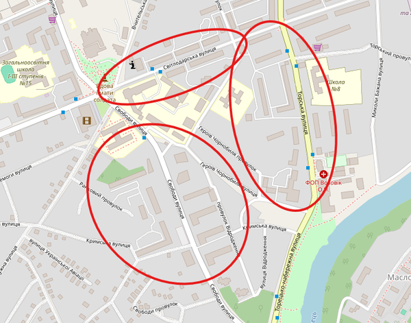
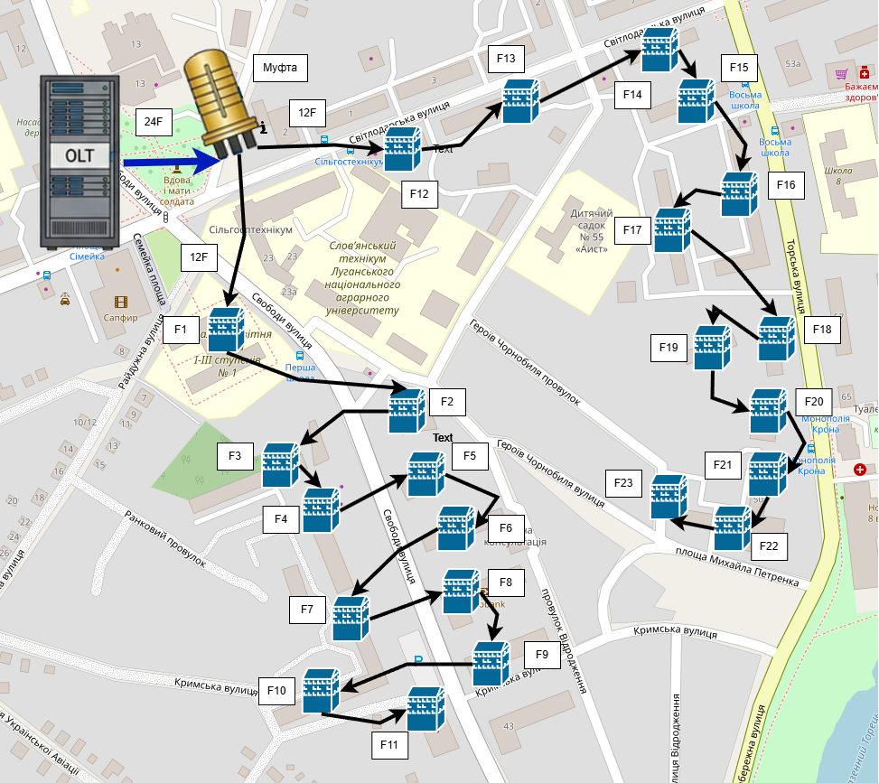
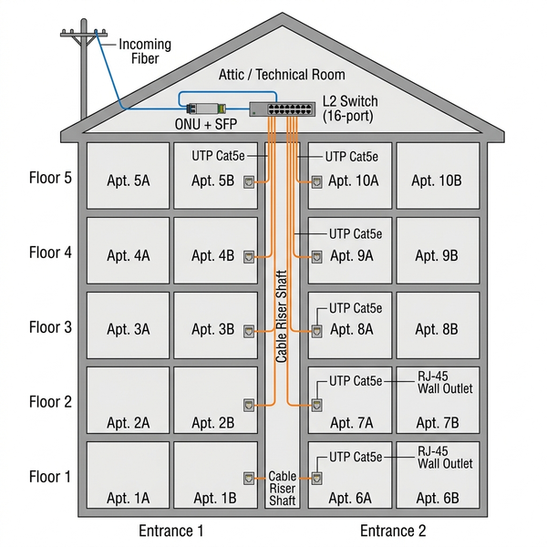

Дисципліна: Практика з комп'ютерних мереж та систем
Лекція 6. Створення проєкту мережі міста за технологією FTTB
Мета лекції: проаналізувати основні етапи покрокового підключення до мережі багатоповерхових будинків за технологією FTTB; навчитись планувати кабельну ємність магістралі, обирати точки розгалуження, формувати каскадні ланцюги FOB-підключень та розраховувати кошторис обладнання для реального проєкту.
Ключові терміни: каскадне підключення, кабельна ємність, оптична муфта, FOB, MDU (Multi-Dwelling Unit), транзитне кросування, BOM (Bill of Materials — специфікація матеріалів), коефіцієнт проникнення, комутатор доступу, топологія «зірка» та «дерево».
План вивчення:
- Постановка задачі: аналіз карти місцевості.
- Від теорії до проєкту: топологія «дерево» для багатоповерхівок.
- Покроковий алгоритм побудови мережі FTTB.
- Внутрішня архітектура MDU: від волокна до квартири.
- Розрахунок кабельної ємності та кошторис (BOM).
1. Постановка задачі: аналіз карти місцевості
У попередній Лекції 4-5 ми розглянули теоретичні засади технологій FTTx, порівняли архітектури FTTB та FTTH і ознайомились з обладнанням. Тепер перейдемо до практичного застосування цих знань — побудуємо реальний проєкт мережі для конкретної місцевості.
Для виконання будь-якого інженерного проєкту необхідно спочатку проаналізувати об'єкт проєктування. У нашому випадку — це карта місцевості з багатоповерховою забудовою.

Рис. 6.1. Карта частини м. Слов'янська Донецької обл. із позначеними зонами багатоповерхової забудови
На карті зображено частину міста із перевагою багатоповерхової забудови. Інженер повинен виконати наступні кроки аналізу:
- Ідентифікація об'єктів: відмітити на карті всі багатоповерхові будинки (потенційні абоненти мережі). Одноповерхові приватні будинки позначаються як такі, що не підключаються до даної мережі FTTB;
- Підрахунок: визначити загальну кількість багатоповерхових будинків на місцевості — це визначить необхідну ємність магістрального кабелю;
- Маршрут магістралі: проаналізувати розташування стовпів ЛЕП та кабельної каналізації для визначення оптимального маршруту прокладання оптичного кабелю;
- Точки розгалуження: визначити перехрестя вулиць, де доцільно встановити оптичну муфту для розподілу кабелю на кілька напрямків.
Приклад. На нашій карті налічується приблизно 23 Багатоповерхові будинки. Отже, для побудови мережі нам потрібен магістральний оптичний кабель ємністю 24 волокна (23 робочих + 1 резервне). Будинки розташовані уздовж двох основних вулиць, що перетинаються, — це означає, що в точці перетину доцільно встановити оптичну муфту для розподілу 24-волоконного кабелю на дві гілки по 12 волокон.
2. Від теорії до проєкту: топологія «дерево» для багатоповерхівок
У першій частині курсу (Лекції 1–3, Практика PON) ми працювали з топологією «шина» — каскадним підключенням абонентів через зварні (FBT) дільники уздовж однієї магістральної лінії. Ця топологія ефективна для розрідженої приватної забудови, де будинки розташовані лінійно вздовж однієї вулиці (детальне порівняння топологій подано в Лекції 2).
Для щільної багатоповерхової забудови ситуація кардинально змінюється. Будинки розташовані по обидва боки кількох вулиць, що перетинаються. Тому оптимальною топологією стає «дерево» (Tree), де:
- Корінь — OLT у серверній провайдера;
- Стовбур — магістральний кабель високої ємності (24F, 48F);
- Розгалуження — оптичні муфти на перехрестях, що ділять кабель на гілки;
- Гілки — 12F, 8F, 4F кабелі, що каскадно зменшуються по мірі підключення будинків;
- Листя — FOB/MDU на кожному будинку, де виділяється одне волокно.
Ключова відмінність від PON. У PON-мережі приватного сектора одне волокно обслуговує до 64 абонентів через каскад дільників, а сигнал ділиться по потужності. У мережі FTTB кожен будинок отримує окреме виділене волокно без поділу сигналу — оптичний бюджет визначається лише SFP-модулем і довжиною магістралі. Це принципово спрощує розрахунок затухання, але потребує більшої кількості волокон у магістральному кабелі.
Водночас існує й гібридний підхід: коли на одну жилу магістралі за допомогою планарних дільників PLC (1×2, 1×4, 1×8) підключають кілька будинків каскадом. Це зменшує кількість потрібних волокон, але вимагає детального розрахунку оптичного бюджету — адже кожен PLC-дільник вносить додаткові втрати.
Таблиця 6.1. Порівняння підходів до розподілу волокон у мережі FTTB
| Критерій | Виділена жила (1 будинок = 1 волокно) |
PLC-каскад (1 волокно → кілька MDU) |
|---|---|---|
| Потрібних волокон у магістралі |
Велика кількість (= кількість будинків) |
Менша кількість (1 волокно на групу) |
| Складність розрахунку |
Мінімальна (тільки довжина кабелю) |
Висока (потрібен оптичний бюджет) |
| Затухання сигналу |
Мінімальне (~0.4 дБ/км) |
Значне (+3.5 дБ на PLC 1×2, +7 дБ на PLC 1×4) |
| Використання портів OLT |
1 порт = 1 будинок (потрібно багато портів) |
1 порт = кілька будинків (ефективніше) |
| Вартість | Вищий кабельний кошторис |
Нижчий кабельний кошторис, але PLC дорогі |
| Типове застосування |
Класична FTTB (до 24–48 будинків) |
Великі мікрорайони (понад 48 будинків) |
3. Покроковий алгоритм побудови мережі FTTB
Розглянемо покроковий процес побудови мережі на прикладі нашої карти з 23 багатоповерховими будинками.
3.1. Крок 1: Встановлення OLT та прокладання магістралі
У серверній кімнаті провайдера встановлюється OLT (Optical Line Terminal) — головний станційний пристрій. Від OLT через оптичний крос (ODF) магістральний оптичний кабель на 24 волокна прокладається по стовпах ЛЕП або кабельній каналізації до точки розгалуження.
3.2. Крок 2: Муфта — точка розгалуження
На перехресті двох основних вулиць встановлюється оптична муфта. У муфті магістральний кабель 24F розварюється на дві гілки:
- Лінія 1 (вул. Свободи): 12 волокон → будинки F1–F11
- Лінія 2 (вул. Світлодарська, вул. Торська): 12 волокон → будинки F12–F23

Рис. 6.2. Каскадна схема підключення будинків до мережі FTTB: від OLT через муфту до кожного FOB
📖 Переклад ключових термінів із зображення
- Server Room / OLT — серверна кімната / оптичний лінійний термінал
- Splice Closure — оптична муфта (точка розгалуження)
- 24F / 12F / 8F / 4F — кількість волокон у кабелі (Fiber count)
- FOB (Fiber Optic Box) — оптичний розподільчий бокс на будинку
- Branch — гілка (напрямок прокладання кабелю)
- Cable Capacity Reduction — зменшення ємності кабелю по мірі підключення
3.3. Крок 3: Каскадне підключення будинків (Лінія 1)
Розглянемо покрокове підключення будинків уздовж Лінії 1 (вул. Свободи):
Таблиця 6.2. Каскадне підключення будинків по Лінії 1 (вул. Свободи)
| FOB | Будинок | Волокон на вході |
Виділено для будинку |
Залишилось робочих |
Кабель далі |
|---|---|---|---|---|---|
| F1 | буд. 2, вул. Свободи | 12 | 1 | 11 | 12F |
| F2 | буд. 23/25, вул. Свободи | 11 | 1 | 10 | 12F |
| F3 | буд. 29, вул. Свободи | 10 | 1 | 9 | 12F |
| F4 | буд. 31, вул. Свободи | 9 | 1 | 8 | → 8F |
| F5 | буд. 33, вул. Свободи | 8 | 1 | 7 | 8F |
| F6 | буд. 37, вул. Свободи | 7 | 1 | 6 | 8F |
| F7 | буд. 39, вул. Свободи | 6 | 1 | 5 | 8F |
| F8 | буд. 41, вул. Свободи | 5 | 1 | 4 | → 4F |
| F9 | буд. 43, вул. Свободи | 4 | 1 | 3 | 4F |
| F10 | буд. 45, вул. Свободи | 3 | 1 | 2 | 4F |
| F11 | буд. 47, вул. Свободи | 2 | 1 | 1 (резерв) | — |
💡 Інженерна оптимізація: заміна кабелю
Зверніть увагу на виділені рядки F4 та F8. Саме на цих FOB виконується заміна магістрального кабелю на менш ємний:
- F4: після підключення 4 будинків робочих волокон залишилось 8 → замінюємо 12-волоконний кабель на 8-волоконний;
- F8: після підключення 8 будинків робочих волокон залишилось 4 → замінюємо 8-волоконний кабель на 4-волоконний.
Така оптимізація значно знижує вартість кабельної інфраструктури, адже 4-волоконний кабель суттєво дешевший і легший за 12-волоконний.
3.4. Крок 4: Підключення Лінії 2
Аналогічним чином підключаємо будинки по Лінії 2 (вул. Світлодарська та вул. Торська): F12–F23. На FOB16 виконуємо заміну 12-волоконного кабелю на 8-волоконний, а на FOB20 — з 8-волоконного на 4-волоконний.
3.5. Крок 5: Підключення абонентів у будинку
На кожному FOB виділене волокно за допомогою оптичного патчкорду з'єднується з абонентським терміналом ONU, у який попередньо вставлено SFP-модуль. Від ONU сигнал надходить на комутатор доступу L2, а від комутатора по кручених парах (UTP Cat5e/Cat6) — до кожної квартири.
4. Внутрішня архітектура MDU: від волокна до квартири
Розглянемо більш детально, що відбувається всередині багатоповерхового будинку — MDU (Multi-Dwelling Unit) — після того, як виділене волокно від FOB потрапило до нього.

Рис. 6.3. Внутрішня архітектура MDU FTTB: від оптичного волокна до квартири абонента
📖 Переклад ключових термінів із зображення
- Incoming Fiber — вхідне оптичне волокно
- ONU + SFP — абонентський термінал з оптичним трансивером
- L2 Access Switch — комутатор доступу рівня L2
- UTP Cat5e/Cat6 — неекранована вита пара (мідний кабель)
- Riser Shaft — вертикальна шахта стояка
- RJ-45 Wall Outlet — настінна мережева розетка RJ-45
- Entrance — під'їзд
- Floor — поверх
- Apt. — квартира (Apartment)
4.1. Режим FTTB (класичний)
У класичному режимі FTTB кожен будинок (або під'їзд великого будинку) обладнується наступним ланцюгом:
- FOB (на стіні або горищі) → виділяється 1 волокно з магістралі;
- Оптичний патчкорд → з'єднує волокно з ONU;
- ONU + SFP-модуль → перетворює оптику в електричний Ethernet-сигнал;
- Комутатор доступу L2 (8/16/24/48 портів) → розподіляє між квартирами;
- UTP Cat5e/Cat6 → кручена пара від комутатора по стояку до кожної квартири;
- RJ-45 розетка → у квартирі абонент підключає свій роутер.
Підбір комутатора доступу. Кількість портів комутатора визначається кількістю реальних абонентів, а не загальною кількістю квартир. Провайдери використовують поняття коефіцієнт проникнення (Penetration Rate) — відсоток квартир, які фактично підключені до послуг. Наприклад, у 5-поверховому будинку з 2 під'їздами та 4 квартирами на поверсі загальна кількість квартир = 40. При коефіцієнті проникнення 60% реальних абонентів буде 24, і для одного під'їзду (12 абонентів) достатньо 16-портового комутатора.
4.2. Режим FTTH всередині MDU
Альтернативним рішенням є режим FTTH всередині MDU, де оптичне волокно прокладається до кожної квартири:
- Магістральне волокно заводиться на горище будинку;
- На горищі встановлюється PLC-дільник (наприклад, 1×16) — головний дільник під'їзду;
- Від дільника волокна спускаються вертикальним стояком (Riser) по поверхах;
- На кожному поверсі може встановлюватись поверховий PLC-дільник для додаткового розподілу;
- У кожній квартирі абонент має свій ONU/ONT — оптичний мережевий термінал.
У цьому режимі кожна квартира для OLT є окремим ONU-абонентом, що вимагає значно більше портів OLT або каскаду PLC-дільників, але забезпечує максимальну швидкість для кожного абонента.
4.3. Каскадування MDU через транзитне кросування
Важливою інженерною можливістю є каскадне підключення кількох будинків (MDU) від однієї магістральної жили. У цьому випадку всередині першого будинку виконується транзитне кросування — частина вхідних жил пропускається «транзитом» через сплайс-касету до наступного будинку:
Приклад каскадування MDU. З муфти до MDU-1 приходить 4-волоконний кабель. У касеті MDU-1 з нього:
- 1 волокно виділяється для підключення MDU-1 через SFP-модуль;
- 3 волокна пропускаються транзитом до MDU-2;
У MDU-2 аналогічно: 1 волокно собі, 2 транзитом до MDU-3, і так далі. Кожен будинок у ланцюзі займає окрему жилу та окремий порт на OLT.
Альтернативний підхід — встановити в MDU-1 дільник PLC 1×4 і від одного вхідного волокна обслуговувати 4 будинки. Це ефективніше використовує волокна, але вносить додаткові оптичні втрати (~7 дБ на PLC 1×4).
5. Розрахунок кабельної ємності та кошторис (BOM)
Завершальним етапом проєктування є формування кошторису обладнання — BOM (Bill of Materials). Це детальний перелік усіх матеріалів, необхідних для реалізації проєкту, «до гвинтика».
5.1. Кабельна ємність
Для нашого проєкту з 23 будинками кабельна структура матиме такий вигляд:
Таблиця 6.3. Розрахунок кабельної ємності для проєкту
| Ділянка | Ємність кабелю |
Відрізок |
|---|---|---|
| OLT → Муфта | 24F | Від серверної до перехрестя |
| Муфта → F1 | 12F | Початок Лінії 1 |
| F1 → F4 | 12F | Вул. Свободи (3 FOB) |
| F4 → F8 | 8F | Вул. Свободи (4 FOB) |
| F8 → F11 | 4F | Вул. Свободи (3 FOB) |
| Муфта → F12 | 12F | Початок Лінії 2 |
| F12 → F16 | 12F | Вул. Світлодарська (4 FOB) |
| F16 → F20 | 8F | Вул. Торська (4 FOB) |
| F20 → F23 | 4F | Вул. Торська (3 FOB) |
5.2. Загальний кошторис (BOM)
Для повної реалізації проєкту знадобиться наступне обладнання:
Таблиця 6.4. Кошторис обладнання (Bill of Materials) для мережі FTTB на 23 будинки
| Категорія | Найменування | Кількість | Примітка |
|---|---|---|---|
| Станційне обладнання | OLT (Optical Line Terminal) | 1 | Мінімум 24 PON-портів |
| Оптичний крос ODF | 1 | На 24+ портів | |
| Пасивне обладнання | Оптична муфта (Splice Closure) | 1 | На перехресті вулиць |
| FOB (Fiber Optic Box) | 23 | По одному на кожен будинок | |
| Активне обладнання | ONU (абонентський термінал) | 23 | По одному на будинок |
| SFP-модуль | 46 | 23 на OLT + 23 на ONU | |
| Оптичний кабель | Кабель 24F | — м | OLT → Муфта |
| Кабель 12F | — м | Муфта → F4, F12 → F16 | |
| Кабель 8F | — м | F4 → F8, F16 → F20 | |
| Кабель 4F | — м | F8 → F11, F20 → F23 | |
| Комутація у будинку | Комутатор доступу L2 | 23–46 | 1–2 на будинок (за кількістю під'їздів) |
| UTP Cat5e (вита пара) | — м | Від комутатора до кожної квартири | |
| RJ-45 розетки | — | По одній на квартиру | |
| Розхідники | Гільзи КДЗС | 48+ | На всі зварні з'єднання в муфті та FOB |
| Оптичні патчкорди SC/UPC | 23 | FOB → ONU | |
| Натяжні затискачі | 46+ | По 2 на кожен FOB (вхід + вихід) |
📊 Автоматизація кошторису
У симуляторі PON Designer, з яким ви працюватимете на практичних заняттях, формування кошторису (BOM) відбувається автоматично. Система аналізує побудовану топологію, класифікує кожен вузол (транзитна муфта, крос-муфта або абонентський бокс), автоматично підбирає моделі обладнання за навантаженням (наприклад, FOB-02 для 4 абонентів або FOB-04 для 16) та рахує всі розхідники — від КДЗС до натяжних затискачів. Результат експортується у CSV-файл з формулами для коригування цін у Microsoft Excel.
Контрольні питання:
- Які попередні кроки аналізу місцевості повинен виконати інженер перед проєктуванням мережі FTTB?
- Чому для щільної багатоповерхової забудови обирається топологія «дерево», а не «шина»?
- Як визначається необхідна ємність магістрального оптичного кабелю?
- Яка роль оптичної муфти в проєкті? У якій точці карти вона встановлюється?
- Поясніть принцип каскадного підключення будинків та заміни кабелю на менш ємний. У чому економічна доцільність?
- Що таке транзитне кросування в MDU? Чим воно відрізняється від підключення через PLC-дільник?
- Які компоненти входять до кошторису (BOM) мережі FTTB? Назвіть основні категорії.
- Яким чином коефіцієнт проникнення впливає на вибір комутатора доступу?